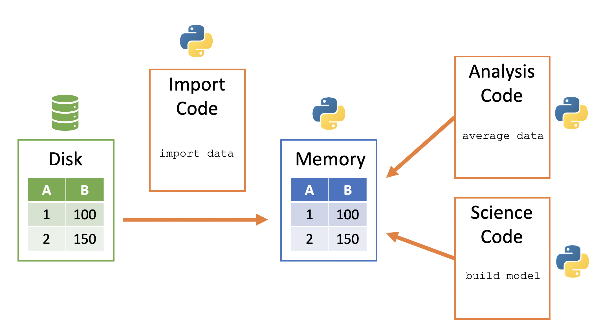

import pandas as pd
planes = pd.read_csv('https://tinyurl.com/planes-data')7 Importing Data and Exploring Pandas DataFrames
Imagine you’re working as a summer intern for a real estate analytics firm. On your first day, your manager hands you a file: “Here’s the raw data for the Ames, Iowa housing market. Let’s start by pulling it into Python and taking a quick look around.”
You double-click the file — it’s filled with rows and rows of numbers, codes, and column headers you don’t quite understand. Where do you even begin?
In this chapter, you’ll walk through the exact steps you’d take in that situation. You’ll load real data, explore it using Python, and start to build your intuition for what’s inside a dataset. You won’t be doing full analysis yet — but you will learn how to get your bearings using one of Python’s most powerful tools: Pandas.
Later chapters will teach you how to clean, transform, and analyze data — but first, you need to bring it into Python and take a look around.
By the end of this chapter, you will be able to:
- Describe how imported data is stored in memory
- Import tabular data with Pandas
- Explore basic structure and metadata of a DataFrame
- Read alternative file formats like Excel, JSON, and Pickle files
Note📓 Follow Along in Colab!
As you read through this chapter, we encourage you to follow along using the companion notebook in Google Colab (or other editor of choice). This interactive notebook lets you run code examples covered in the chapter—and experiment with your own ideas.
👉 Open the Importing Data Notebook in Colab.
7.1 From Disk to DataFrame: How Data Enters Python
Python stores its data in memory - this makes it relatively quickly accessible but can cause size limitations in certain fields. In this class we will mainly work with small to moderate data sets, which means we should not run into any space limitations.
Python does provide tooling that allows you to work with big data via distributed data (i.e. Pyspark) and relational databrases (i.e. SQL).
Python memory is session-specific, so quitting Python (i.e. shutting down JupyterLab) removes the data from memory. A general way to conceptualize data import into and use within Python:
- Data sits in on the computer/server - this is frequently called “disk”
- Python code can be used to copy a data file from disk to the Python session’s memory
- Python data then sits within Python’s memory ready to be used by other Python code
Here is a visualization of this process:

7.2 Importing Delimited Files with read_csv()
Text files are a popular way to store and exchange tabular data. Nearly every data application supports exporting to CSV (Comma Separated Values) format or another type of text-based format. These files use a delimiter — such as a comma, tab, or pipe symbol — to separate elements within each line. Because of this consistent structure, importing text files into Python typically follows a straightforward process once the delimiter is identified.
Pandas provides a very efficient and simple way to load these types of files using its read_csv() function. While there are other approaches available (such as Python’s built-in csv module), Pandas is preferred for its ease of use and direct creation of a DataFrame — the primary tabular data structure used throughout this course.
In the example below, we use read_csv() to load a dataset listing some information on aircraft.
Please note that you must have internet access for this example to work.
In this first example, we will demonstrate how to import data directly from a URL. This approach is useful when your data is hosted online and you want to access it directly within your analysis.
Later in this chapter, we will discuss how to import data that resides on your local computer.
We see that our imported data is represented as a DataFrame:
type(planes)pandas.core.frame.DataFrameWe can look at it in the Jupyter notebook, since Jupyter will display it in a well-organized, pretty way.
planes| tailnum | year | type | manufacturer | model | engines | seats | speed | engine | |
|---|---|---|---|---|---|---|---|---|---|
| 0 | N10156 | 2004.0 | Fixed wing multi engine | EMBRAER | EMB-145XR | 2 | 55 | NaN | Turbo-fan |
| 1 | N102UW | 1998.0 | Fixed wing multi engine | AIRBUS INDUSTRIE | A320-214 | 2 | 182 | NaN | Turbo-fan |
| 2 | N103US | 1999.0 | Fixed wing multi engine | AIRBUS INDUSTRIE | A320-214 | 2 | 182 | NaN | Turbo-fan |
| 3 | N104UW | 1999.0 | Fixed wing multi engine | AIRBUS INDUSTRIE | A320-214 | 2 | 182 | NaN | Turbo-fan |
| 4 | N10575 | 2002.0 | Fixed wing multi engine | EMBRAER | EMB-145LR | 2 | 55 | NaN | Turbo-fan |
| ... | ... | ... | ... | ... | ... | ... | ... | ... | ... |
| 3317 | N997AT | 2002.0 | Fixed wing multi engine | BOEING | 717-200 | 2 | 100 | NaN | Turbo-fan |
| 3318 | N997DL | 1992.0 | Fixed wing multi engine | MCDONNELL DOUGLAS AIRCRAFT CO | MD-88 | 2 | 142 | NaN | Turbo-fan |
| 3319 | N998AT | 2002.0 | Fixed wing multi engine | BOEING | 717-200 | 2 | 100 | NaN | Turbo-fan |
| 3320 | N998DL | 1992.0 | Fixed wing multi engine | MCDONNELL DOUGLAS CORPORATION | MD-88 | 2 | 142 | NaN | Turbo-jet |
| 3321 | N999DN | 1992.0 | Fixed wing multi engine | MCDONNELL DOUGLAS CORPORATION | MD-88 | 2 | 142 | NaN | Turbo-jet |
3322 rows × 9 columns
This is a nice representation of the data, but we really do not need to display that many rows of the DataFrame in order to understand its structure. Instead, we can use the head() method of data frplanes to look at the first few rows. This is more manageable and gives us an overview of what the columns are. Note also the the missing data was populated with NaN.
planes.head()| tailnum | year | type | manufacturer | model | engines | seats | speed | engine | |
|---|---|---|---|---|---|---|---|---|---|
| 0 | N10156 | 2004.0 | Fixed wing multi engine | EMBRAER | EMB-145XR | 2 | 55 | NaN | Turbo-fan |
| 1 | N102UW | 1998.0 | Fixed wing multi engine | AIRBUS INDUSTRIE | A320-214 | 2 | 182 | NaN | Turbo-fan |
| 2 | N103US | 1999.0 | Fixed wing multi engine | AIRBUS INDUSTRIE | A320-214 | 2 | 182 | NaN | Turbo-fan |
| 3 | N104UW | 1999.0 | Fixed wing multi engine | AIRBUS INDUSTRIE | A320-214 | 2 | 182 | NaN | Turbo-fan |
| 4 | N10575 | 2002.0 | Fixed wing multi engine | EMBRAER | EMB-145LR | 2 | 55 | NaN | Turbo-fan |
Knowledge Check
7.3 File Paths
In the previous example, we imported data directly from a URL; however, datasets often reside on our computer and we need to specify the file path to read them from. For example, rather than import the planes.csv data from the URL we used above, I can read in that same dataset as follows.
planes = pd.read_csv('../data/planes.csv')
planes.head()| tailnum | year | type | manufacturer | model | engines | seats | speed | engine | |
|---|---|---|---|---|---|---|---|---|---|
| 0 | N10156 | 2004.0 | Fixed wing multi engine | EMBRAER | EMB-145XR | 2 | 55 | NaN | Turbo-fan |
| 1 | N102UW | 1998.0 | Fixed wing multi engine | AIRBUS INDUSTRIE | A320-214 | 2 | 182 | NaN | Turbo-fan |
| 2 | N103US | 1999.0 | Fixed wing multi engine | AIRBUS INDUSTRIE | A320-214 | 2 | 182 | NaN | Turbo-fan |
| 3 | N104UW | 1999.0 | Fixed wing multi engine | AIRBUS INDUSTRIE | A320-214 | 2 | 182 | NaN | Turbo-fan |
| 4 | N10575 | 2002.0 | Fixed wing multi engine | EMBRAER | EMB-145LR | 2 | 55 | NaN | Turbo-fan |
But to understand why I use '../data/planes.csv' in the code above, we need to spend a little time talking about file paths.
It’s important to understand where files exist on your computer and how to reference those paths. There are two main approaches:
- Absolute paths
- Relative paths
An absolute path always contains the root elements and the complete list of directories to locate the specific file or folder. For the planes.csv file, the absolute path on my computer is:
import os
absolute_path = os.path.abspath('../data/planes.csv')
absolute_path'/home/runner/work/uc-bana-4080/uc-bana-4080/data/planes.csv'I can always use this absolute path in pd.read_csv():
planes = pd.read_csv(absolute_path)In contrast, a relative path is a path built starting from the current location. For example, say that I am operating in a directory called “Project A”. If I’m working in “my_notebook.ipynb” and I have a “my_data.csv” file in that same directory:
# illustration of the directory layout
Project A
├── my_notebook.ipynb
└── my_data.csvThen I can use this relative path to import this file: pd.read_csv('my_data.csv'). This just means to look for the ‘my_data.csv’ file relative to the current directory that I am in.
Often, people store data in a “data” directory. If this directory is a subdirectory within my Project A directory:
# illustration of the directory layout
Project A
├── my_notebook.ipynb
└── data
└── my_data.csvThen I can use this relative path to import this file: pd.read_csv('data/my_data.csv'). This just means to look for the ‘data’ subdirectory relative to the current directory that I am in and then look for the ‘my_data.csv’ file.
Sometimes, the data directory may not be in the current directory. Sometimes a project directory will look the following where there is a subdirectory containing multiple notebooks and then another subdirectory containing data assets. If you are working in “notebook1.ipynb” within the notebooks subdirectory, you will need to tell Pandas to go up one directory relative to the notebook you are working in to the main Project A directory and then go down into the data directory.
# illustration of the directory layout
Project A
├── notebooks
│ ├── notebook1.ipynb
│ ├── notebook2.ipynb
│ └── notebook3.ipynb
└── data
└── my_data.csvI can do this by using dot-notation in my relative path specification - here I use ‘..’ to imply “go up one directory relative to my current location”: pd.read_csv('../data/my_data.csv'). And this is why is used '../data/planes.csv' in the code at the beginning of this section, because my directory layout is:
Project A
├── notebooks
│ ├── notebook1.ipynb
│ ├── notebook2.ipynb
│ └── notebook3.ipynb
└── data
└── planes.csvKnowledge Check
Great idea — adding an example using Google Colab will help students who are working in the cloud and need to upload files directly from their local machine. Here’s a clean, student-friendly example you can drop into your chapter:
7.4 Importing Data in Google Colab
If you’re working in Google Colab, your files aren’t stored on your local machine — you’re running code on a cloud-based virtual machine. That means reading in local files (like a .csv on your desktop) works a little differently.
Here’s how you can upload a file directly from your computer into Colab:
from google.colab import files
# This will open a file picker in Colab
uploaded = files.upload()Once you select the file you want to upload (e.g., planes.csv), Colab will store it temporarily in your session and make it available to use just like any other file:
import pandas as pd
# Now you can load the file into a DataFrame
planes = pd.read_csv('planes.csv')Files uploaded this way only persist for the current Colab session. If you close the browser or restart your runtime, you’ll need to re-upload the file.
7.5 Inspecting Your DataFrame
After importing, the data is stored as a DataFrame — the core data structure in Pandas. And with DataFrames, there are several ways to start understanding some basic, descriptive information about our data. For example, we can get the dimensions of our DataFrame. Here, we see that we have 3,322 rows and 9 columns.
planes.shape(3322, 9)We can also see what type of data each column is. For example, we see that the tailnum column data type is object, the year column is a floating point (float64), and engines is an integer (int64).
planes.dtypestailnum object
year float64
type object
manufacturer object
model object
engines int64
seats int64
speed float64
engine object
dtype: objectThe following are the most common data types that appear frequently in DataFrames.
- boolean - only two possible values,
TrueandFalse - integer - whole numbers without decimals
- float - numbers with decimals
- object - typically strings, but may contain any object
- datetime - a specific date and time with nanosecond precision
Booleans, integers, floats, and datetimes all use a particular amount of memory for each of their values. The memory is measured in bits. The number of bits used for each value is the number appended to the end of the data type name. For instance, integers can be either 8, 16, 32, or 64 bits while floats can be 16, 32, 64, or 128. A 128-bit float column will show up as float128. Technically a float128 is a different data type than a float64 but generally you will not have to worry about such a distinction as the operations between different float columns will be the same.
We can also use the info() method, which provides output similar to dtypes, but also shows the number of non-missing values in each column along with more info such as:
- Type of object (always a DataFrame)
- The type of index and number of rows
- The number of columns
- The data types of each column and the number of non-missing (a.k.a non-null)
- The frequency count of all data types
- The total memory usage
planes.info()<class 'pandas.core.frame.DataFrame'>
RangeIndex: 3322 entries, 0 to 3321
Data columns (total 9 columns):
# Column Non-Null Count Dtype
--- ------ -------------- -----
0 tailnum 3322 non-null object
1 year 3252 non-null float64
2 type 3322 non-null object
3 manufacturer 3322 non-null object
4 model 3322 non-null object
5 engines 3322 non-null int64
6 seats 3322 non-null int64
7 speed 23 non-null float64
8 engine 3322 non-null object
dtypes: float64(2), int64(2), object(5)
memory usage: 233.7+ KBKnowledge Check
7.6 Attributes & Methods
We’ve seen that we can use the dot-notation to access functions in libraries (i.e. pd.read_csv()). We can use this same approach to access things inside of objects. What’s an object? Basically, a variable that contains other data or functionality inside of it that is exposed to users. Consequently, our DataFrame item is an object.
In the above code, we saw that we can make different calls with our DataFrame such as planes.shape and planes.head(). An observant reader probably noticed the difference between the two – one has parentheses and the other does not.
An attribute inside an object is simply a variable that is unique to that object and a method is just a function inside an object that is unique to that object.
Variables inside an object are often called attributes and functions inside objects are called methods.
attribute: A variable associated with an object and is referenced by name using dotted expressions. For example, if an object o has an attribute a it would be referenced as o.a
method: A function associated with an object and is also referenced using dotted expressions but will include parentheses. For example, if an object o has a method m it would be called as o.m()
Earlier, we saw the attributes shape and dtypes. Another attribute is columns, which will list all column names in our DataFrame.
planes.columnsIndex(['tailnum', 'year', 'type', 'manufacturer', 'model', 'engines', 'seats',
'speed', 'engine'],
dtype='object')Similar to regular functions, methods are called with parentheses and often take arguments. For example, we can use the tail() method to see the last n rows in our DataFrame:
planes.tail(3)| tailnum | year | type | manufacturer | model | engines | seats | speed | engine | |
|---|---|---|---|---|---|---|---|---|---|
| 3319 | N998AT | 2002.0 | Fixed wing multi engine | BOEING | 717-200 | 2 | 100 | NaN | Turbo-fan |
| 3320 | N998DL | 1992.0 | Fixed wing multi engine | MCDONNELL DOUGLAS CORPORATION | MD-88 | 2 | 142 | NaN | Turbo-jet |
| 3321 | N999DN | 1992.0 | Fixed wing multi engine | MCDONNELL DOUGLAS CORPORATION | MD-88 | 2 | 142 | NaN | Turbo-jet |
We will be exposed to many of the available DataFrame methods throughout this course!
Knowledge Check
7.7 Common DataFrame Errors
As you’re learning to work with DataFrames in Pandas, you’ll likely encounter a few common errors. Don’t worry — these are normal and part of the learning process. This section introduces a few of the most frequent issues and how to fix them.
Forgetting Parentheses When Using a Method
One of the most common mistakes is confusing methods with attributes. Remember: methods require parentheses () — even if they don’t take arguments.
ames.head # 🚫 Returns the method itself, not the data
ames.head() # ✅ Correct — this returns the first few rowsTypos in Column Names
Column names in a DataFrame must be typed exactly as they appear. They’re case-sensitive and must match spacing and punctuation.
ames['SalePrice'] # ✅ Correct
ames['saleprice'] # 🚫 KeyError: 'saleprice'Tip: Use ames.columns to check exact column names.
FileNotFoundError When Loading a File
This happens when the file path is incorrect or the file isn’t in the expected location.
# 🚫 Incorrect: file doesn't exist at this path
pd.read_csv('data.csv')
# ✅ Correct (based on your current working directory)
pd.read_csv('../data/ames_raw.csv')Tip: Use os.getcwd() to check your working directory, and os.path.abspath() to confirm the full path.
Using Dot Notation with Column Names that Contain Spaces or Special Characters
Pandas allows you to access columns using dot notation only if the column name is a valid Python variable name.
ames.SalePrice # ✅ Works (if column is named 'SalePrice')
ames.MS Zoning # 🚫 SyntaxError
# ✅ Use bracket notation instead
ames['MS Zoning']Confusing Methods That Don’t Exist
Sometimes, learners assume there’s a method for something that doesn’t exist.
ames.rows() # 🚫 AttributeError: 'DataFrame' object has no attribute 'rows'Tip: Use dir(ames) to see a list of available methods and attributes, or use tab-completion in Jupyter to explore.
7.8 Other File Types
So far, we’ve focused on CSVs — the most common format for tabular data. But Python, especially through the Pandas library, can import a wide variety of file types beyond just delimited text files.
Here are a few common formats you might encounter:
- Excel spreadsheets (
.xls,.xlsx) - JSON files — often used for APIs and web data
- Pickle files — Python’s own format for saving data structures
- SQL databases — such as SQLite, PostgreSQL, or MySQL
- Parquet and Feather — efficient storage formats for big data workflows
In most cases, Pandas provides a convenient read_ function to handle the import process. For example, let’s look at how we can import an Excel file directly — without converting it to a CSV first.
Importing Excel Files with read_excel()
Excel is still one of the most widely used tools for storing and sharing data. And while many users convert Excel files into CSVs before importing them into Python, Pandas allows you to skip that step entirely.
To import data directly from an Excel workbook, you can use the read_excel() function. But first, you may need to install an additional dependency:
# Run this in your terminal if you haven’t already
pip install openpyxlIn this example, we’ll import a mock dataset of grocery store products stored in a file called products.xlsx (download here).
# Preview the available sheets in the workbook
products_excel = pd.ExcelFile('../data/products.xlsx')
products_excel.sheet_names['metadata', 'products data', 'grocery list']To load a specific sheet from this workbook:
If you don’t explicitly specify a sheet name, Pandas will default to importing the first worksheet in the file.
products = pd.read_excel('../data/products.xlsx', sheet_name='products data')
products.head()| product_num | department | commodity | brand_ty | x5 | |
|---|---|---|---|---|---|
| 0 | 92993 | NON-FOOD | PET | PRIVATE | N |
| 1 | 93924 | NON-FOOD | PET | PRIVATE | N |
| 2 | 94272 | NON-FOOD | PET | PRIVATE | N |
| 3 | 94299 | NON-FOOD | PET | PRIVATE | N |
| 4 | 94594 | NON-FOOD | PET | PRIVATE | N |
Here’s an additional video provided by Corey Schafer that you might find useful. It covers importing and exporting data from multiple different sources.
7.9 Summary
In this chapter, you learned how to import real-world data into Python and begin exploring it using Pandas — one of the most important tools in the data science workflow.
You started with a realistic scenario: opening up a raw dataset and figuring out how to make sense of it. You learned how to read in delimited files (like CSVs), use relative and absolute file paths, and inspect your data using essential DataFrame attributes and methods like .shape, .dtypes, .info(), and .head().
You also saw how Pandas supports a wide variety of file formats beyond CSV, including Excel, JSON, Pickle, and SQL databases — making it a flexible tool for working with nearly any type of data source.
This chapter was focused on getting your data into Python and taking a first look around. In upcoming chapters, we’ll dig into the heart of data science: cleaning, wrangling, summarizing, and uncovering patterns in your data to support real-world decision making.
7.10 Exercise: COVID-19 Cases at U.S. Colleges
The New York Times published a dataset tracking COVID-19 cases at colleges and universities across the United States. You can read about this dataset here. In this exercise, you’ll download and explore that dataset to practice the skills you’ve learned in this chapter.